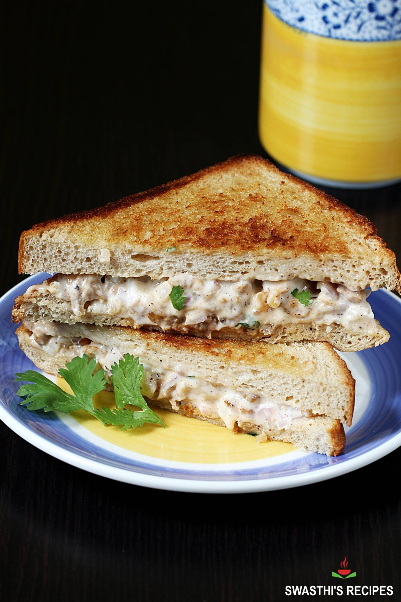

Chiken Sandwich

Ingredients:
- Chicken breast fillets
- Multigrain bread slices
- Lettuce leaves
- Tomato slices
- Mayonnaise
- Salt
- Black pepper
- Olive oil
- Optional: Cheese slices, pickles, onions
Steps to Make:
- Season chicken breast fillets with salt and black pepper.
- Heat olive oil in a pan over medium heat and grill the chicken fillets until cooked through, about 4-5 minutes per side.
- Toast the multigrain bread slices lightly.
- Spread a layer of mayonnaise on one side of each bread slice.
- Layer lettuce leaves and tomato slices atop the mayo.
- Place the grilled chicken fillets on the veggies.
- Optionally, add cheese slices, pickles, or onions.
- Top with another bread slice to form a sandwich and serve your delightful multigrain chicken creation.